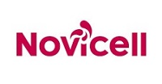
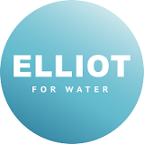

Timeline
Led a team of 4 developers to deliver a web-based version of an established suite of pension calculation and modelling tools, successfully onboarding multiple customers post-launch. Designed the underlying architecture to support customer-specific functionality on top of a shared core, enabling tailored deployments for each client without forking the codebase.

Returned to Novicell to contribute across three projects: ongoing development on the cooling products quoting system, a logistics platform for a Danish bus operator to help manage fleet positioning, and a tracking system for automotive parts.

Led a cross-functional team of developers and designers to deliver a search engine platform built on Azure (DevOps, App Services, SQL Databases), C#, .NET Core, MVC, Razor, and React.
Worked as part of a development team to deliver a quoting and configuration application for Advansor's CO2-based industrial refrigeration and heat pump systems, used to specify and price installations for major European food retailers including Aldi and Carrefour.
Developed software for fertility clinics to track individual vials stored in liquid nitrogen Dewars, supporting clinical workflows where chain-of-custody had to be infallible.
Led a team of developers in an agile environment to deliver a cross-platform mobile app for Wells Fargo, which passed the security acceptance review on first submission.
Designed, built, and delivered a scalable Continuous Integration and Delivery pipeline that automatically deployed and tested hundreds of production services.
Took over an underperforming cross-functional team and turned it around to consistently deliver within estimates.
Various contracts in and around London.